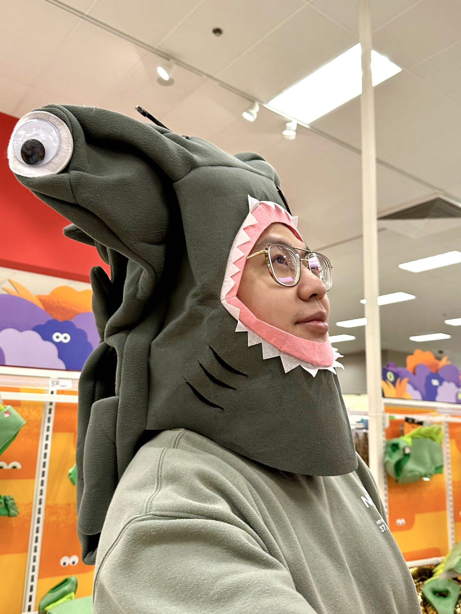
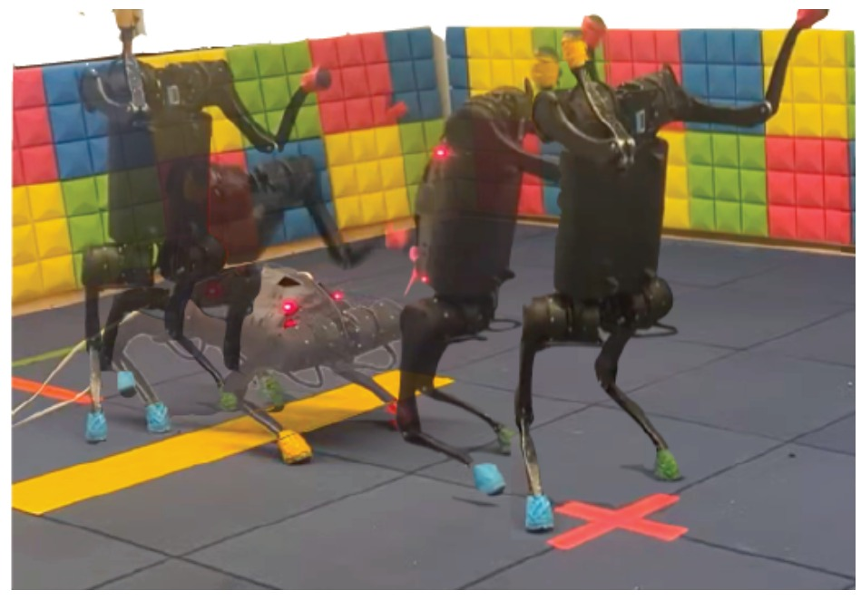
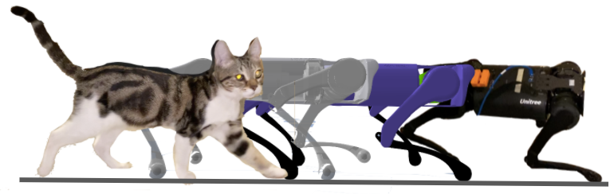
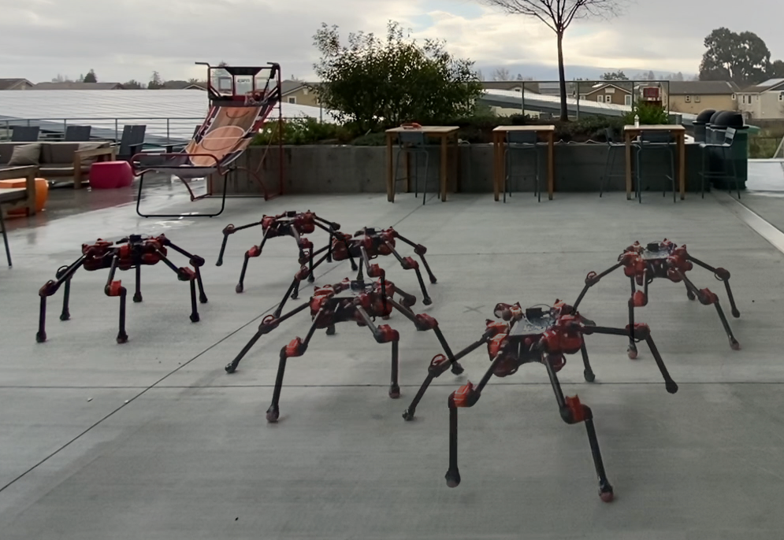
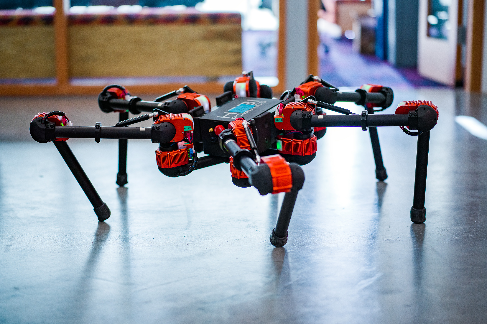
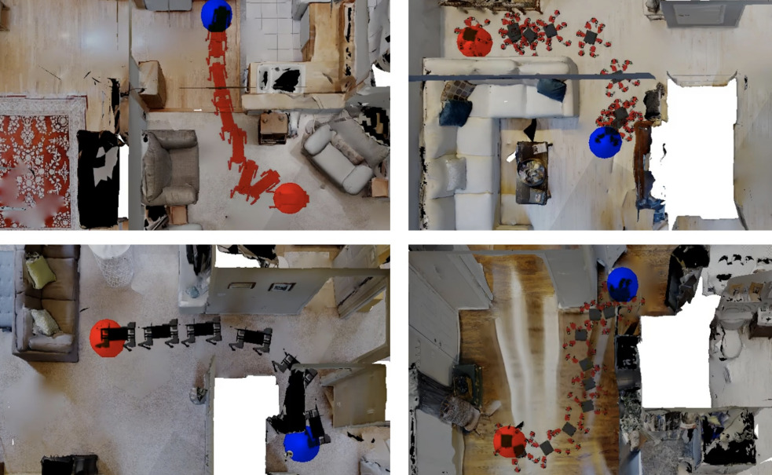
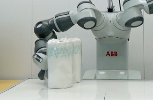
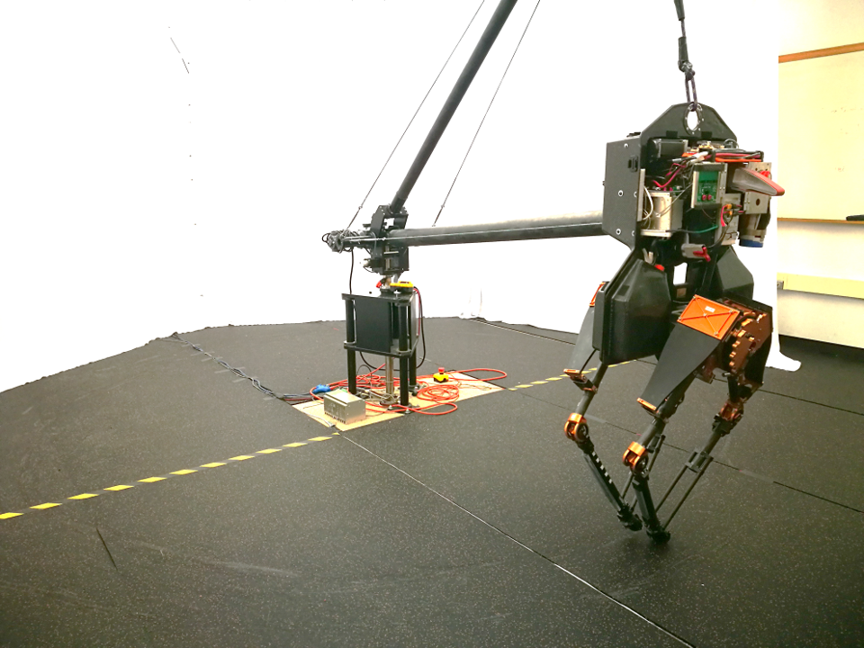

Tianyu Li - 黎天宇 Email : bzdlity@gmail.com
I am a CS Phd at Georgia Tech working with Prof.Sehoon Ha .
I was a research scientist at Meta(Facebook) AI Research .
My research interests generally lie at the intersection of Reinforcement Learning , Robotics and Computer Animation .
My current focus is on transferring human motion to robots with significantly different morphology. This technique will allow any robot learning skills directly from human demonstrations.
Beside this direction, I'm also working on several other projects related to agile locomotion and reinforcement learning.
Google Scholar /
Twitter

News
One paper submitted to SIGGRAPH 2023
One paper submitted to RSS 2023
One paper submitted to IROS 2023
ACE: Adversarial Correspondence Embedding for Cross Morphology Motion Retargeting from Human to Nonhuman Characters
Tianyu Li , Jungdam Won, Alexander Clegg, Jeonghwan Kim, Akshara Rai, Sehoon Ha
Submitted to XXX , 2023
Project Page
/
Paper
/
Video

Learning and Adapting Agile Locomotion Skills by Transferring Experience
Tianyu Li , Linda Luu, Xue Bin Peng, Sehoon Ha, Jie Tan, Sergey Levine
RSS , 2023
Project Page
/
Arxiv
ARMP: Autoregressive Motion Planning for Quadruped Locomotion and Navigation in Complex Indoor Environment
Tianyu Li , Sehoon Ha
Submitted to IROS , 2023
Project Page
/
Arxiv
/
Video

FastMimic: Model-based Motion Imitation for Agile, Diverse and Generalizable Quadrupedal Locomotion
Tianyu Li , Jungdam Won, Sehoon Ha, Akshara Rai
Submitted to Robotics , 2023
Paper
/
Video

Planning in learned latent action spaces for generalizable legged locomotion
Tianyu Li , Roberto Calandra, Deepak Pathak, Yuandong Tian, Franziska Meier, Akshara Rai
RA-L , 2021
Paper
/
Video

Learning generalizable locomotion skills with hierarchical reinforcement learning
Tianyu Li , Nathan Lambert, Roberto Calandra, Franziska Meier, Akshara Rai
ICRA , 2020
Paper
/
Video

Learning navigation skills for legged robots with learned robot embeddings
Tianyu Li , Franziska Meier, Sonia Chernova, Dhruv Batra, Akshara Rai
IROS , 2020
Paper

Bayesian optimization in variational latent spaces with dynamic compression
Tianyu Li , Danica Kragic
CoRL , 2019
Paper

Using deep reinforcement learning to learn high-level policies on the atrias biped
Tianyu Li , Hartmut Geyer, Christopher G Atkeson, Akshara Rai
ICRA , 2019
Paper
Modified version of template from this .

{kind=link}
{kind=link}